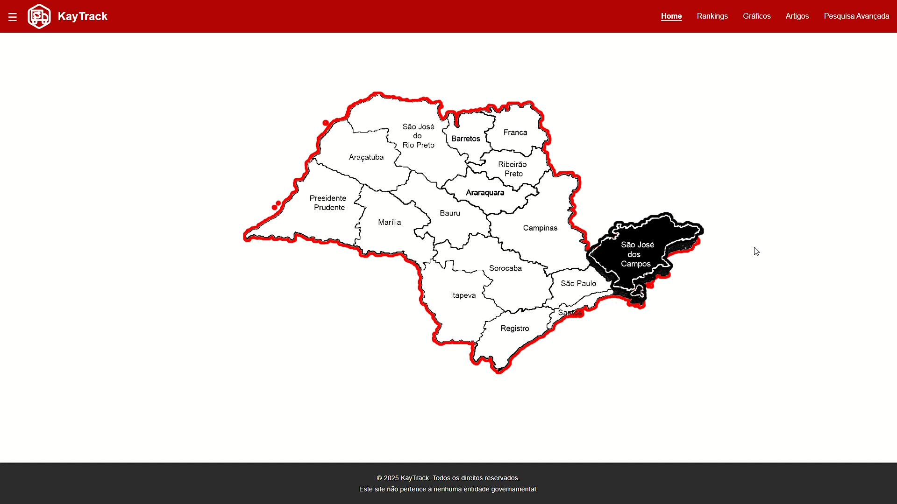

Sobre mim
Meu nome é Gabriel de Oliveira Gonçalves, tenho 18 anos e sou estudante de Desenvolvimento de Software Multiplataforma na FATEC São José dos Campos – Prof. Jessen Vidal. Tenho como objetivo me tornar um desenvolvedor Front-End de excelência, sempre em busca de novos conhecimentos e do aprimoramento contínuo das minhas habilidades, tenho conhecimento em HTML, CSS, Bootstrap, Python e SQL.
Tenho um interesse especial pela área de Front-End, onde encontro grande satisfação em estruturar e estilizar interfaces — seja em aplicações web ou outros tipos de software. Gosto de transformar ideias em soluções visuais funcionais, focando sempre na usabilidade, na performance e na experiência do usuário. Acredito que dedicação, curiosidade e aprendizado constante são essenciais para evoluir na área de tecnologia, e é com esse espírito que venho construindo minha trajetória estudantil e profissional.
Projetos
Aplicação web de consulta e análise dos dados públicos de exportação/importações dos municípios de São Paulo:
O objetivo do nosso projeto é disponibilizar uma ferramenta de consulta e análise, capaz de realizar pesquisas intuitivas e análises comparativas dos dados públicos de importação e exportação, assim proporcionando a democratização do acesso a informação de maneira simplificada.
Tecnologias utilizadas:
- -HTML

- -CSS

- -Python

- -Flask

- -MySQL

- -Google Colab
Minha participação no projeto
Atuei diretamente na conversão e implementação do protótipo visual do projeto em código, utilizando as linguagens HTML e CSS para estruturar e estilizar a interface de acordo com o design previamente definido. Essa etapa exigiu atenção aos detalhes visuais, responsividade e fidelidade ao layout original, garantindo uma experiência de navegação consistente em diferentes dispositivos.
Além da página principal, desenvolvi a paginação e navegação de outras quatro seções fundamentais do site:
Página de Artigos:
exibição organizada de conteúdos textuais com elementos visuais e hierarquia clara para facilitar a leitura.
Página de Gráficos:
integração e apresentação visual de dados por meio de elementos gráficos, promovendo a compreensão intuitiva das informações.
Página de Rankings:
organização de dados em formatos classificatórios, com destaque visual para os principais elementos.
Página de Pesquisa:
funcionalidade voltada à busca de conteúdos dentro do site, com estrutura adequada para filtragem e exibição de resultados.
Certificados
Alura:
- Programação - 125h
- Front-End - 18h
- Inteligência Artificial - 8h
- Primeiros passos com Engenharia de Dados - 55h
- Excel - 50h
- Criatividade - 38h
- Habilidades e comportamento - 55h
- Carreira - 56h
- Produtividade - 55h
- Gestão da inovação - 39h
Centro Paula Souza:
- Escola de inovadores - 40h